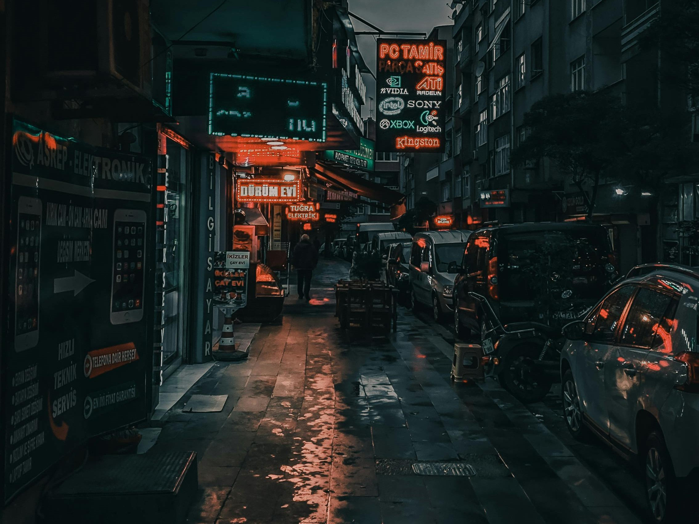
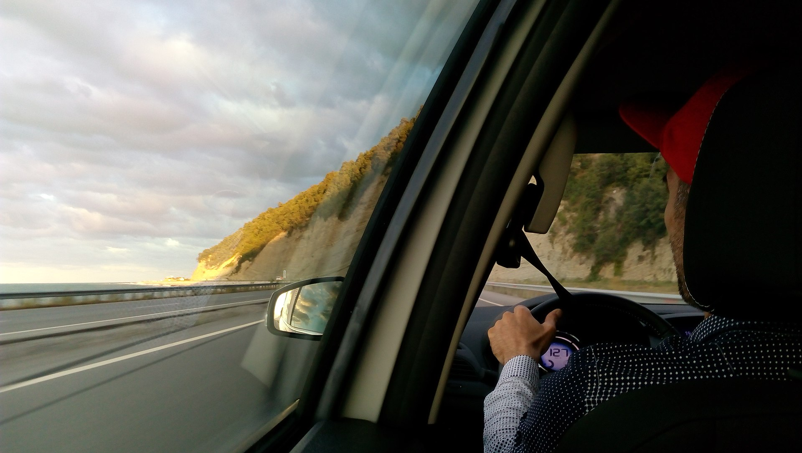
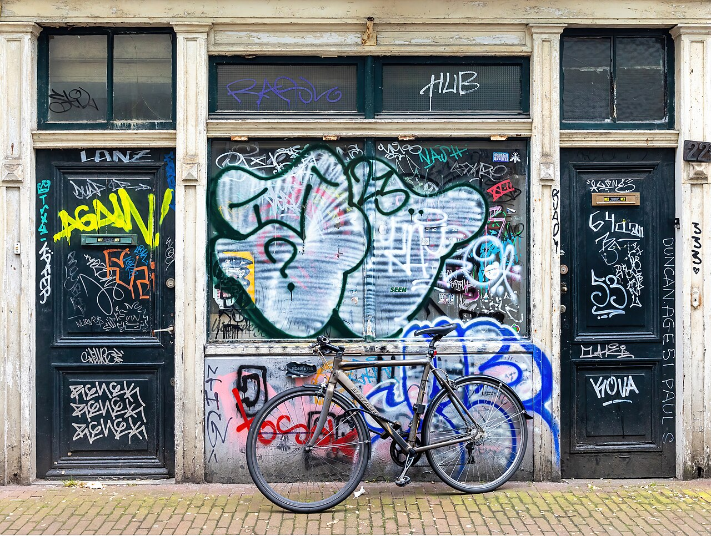
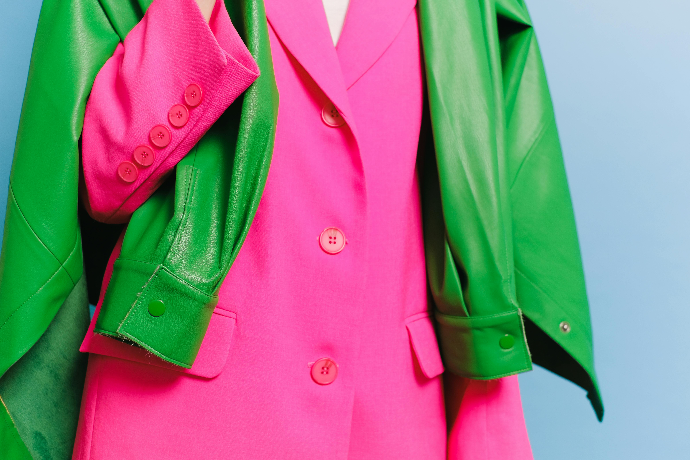
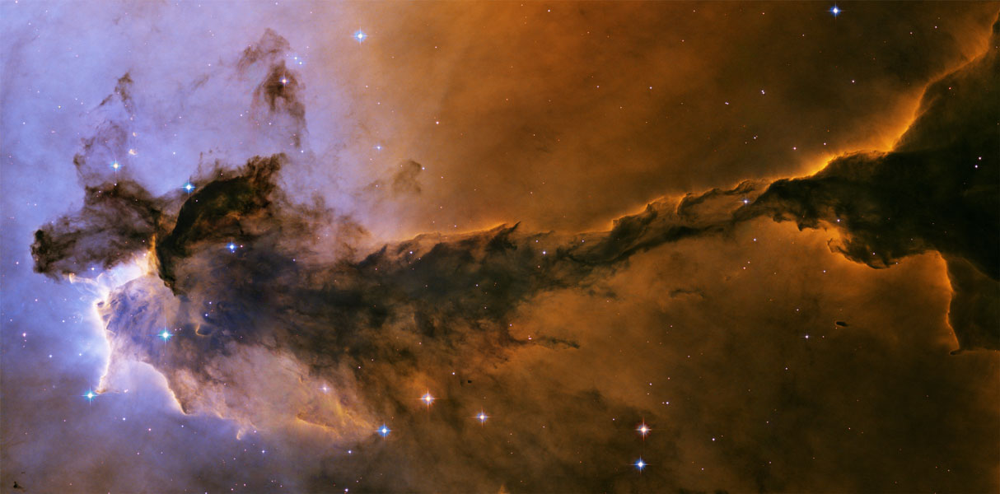

obviously i can't use album art so i will use representational images instead.
Lighted Candles in an Illuminated Room by Steve Johnson.
BALLISTIK BOYS and LIL LEAGUE are two groups under LDH as part of their Exile Tribe supergroup. "Icy Fire" is a song in the Jr. Exile vs Neo Exile installment of the BATTLE OF TOKYO project.

City street with cars and buildings at night by Furknsaglam.
As of , 頑美 is the most recent music video release from Taiwanese girl group PER6IX. It ended up being my most-listened-to song of 2024.

By Tenasan - Own work, CC BY-SA 4.0, Link.
IMPACTors changed their name to IMP. after leaving Johnny & Associates (Now known as Starto Entertainment). CRUISIN is their first release under Tobe Music.

By Basile Morin - Own work, CC BY-SA 4.0, Link.
This song had been teased months before its actual release. When I heard the first snippets I was hooked. I sat there with bated breath, counting the days until the song would be released. I wondered if it would live up to the image I had created in my head. Fortunately, it did not disappoint.

Woman Wearing Pink Blazer and Green Jacket by Anna Shvets.
As a fan of the video game series Splatoon, this song has special meaning. In the game series, there are many fictional music groups within the game's universe. One of these groups is Off the Hook made up of Pearl and Marina, voiced by Rina Itou (vocalist of Lighter190E) and Alice Peralta respectively.

Fairy of Eagle Nebula by NASA, ESA, and The Hubble Heritage Team (STScI/AURA) - adpod, spacetelescope, Public Domain.
PIXY's debut song. A trap beat paired with angelic vocals and horror visuals.